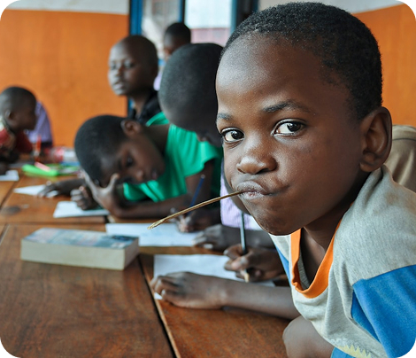

Serving Humanity with Compassion, One Project at a Time
Hayat Aid Organization is a non-profit charity based in Iganga, Uganda, dedicated to uplifting the lives of the poor, orphans, disabled, and underserved communities through impactful, faith-rooted humanitarian projects.
Since our founding, we've worked tirelessly to ensure that every meal shared, Quran distributed, well constructed, or mosque built not only meets a need — but restores dignity and hope.